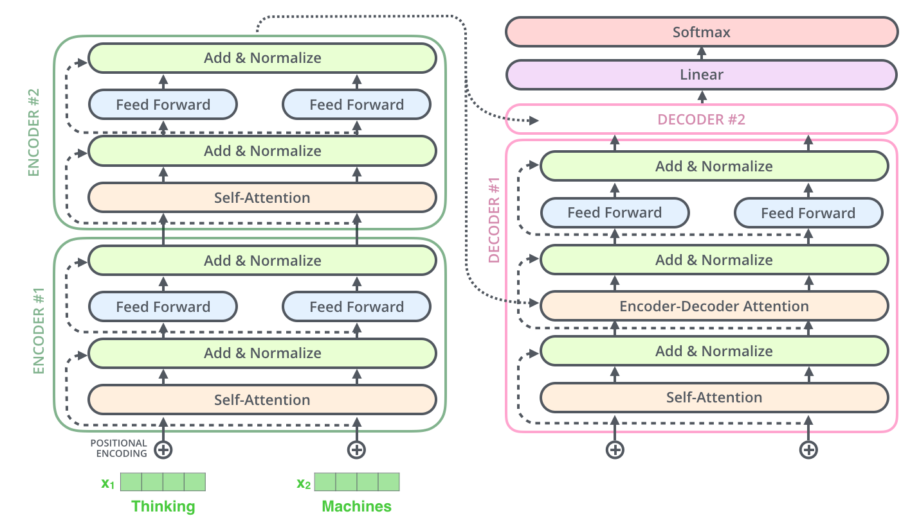

社会科学中的量化文本研究与大语言模型

课程介绍
在社会科学以及广义的人文学科中，一些有趣且重要的概念主要（有时甚至是唯一）通过文字形式来呈现的。这是因为社会生活在很大程度上是通过语言来展开的：法律以书面形式制定，演讲以口语表达，历史事件被记录在案，信件和通信被交换等等。
长期以来，社会科学家在分析这些社会过程所产生的文本时所投入的时间相对较少，主要有两个原因。首先，针对社会文本展开研究时，研究者通常只能获取数量有限的文献资料，因此定性研究在此类分析中既具吸引力又具可行性。其次，当大规模文献资料可得时，分析这些文本往往成本高昂且技术复杂。
然而，近年来，社会科学研究中可获取的基于文本的数据量迅猛增长，这主要得益于海量文本资源的在线公开。此外，文本数字化程度的不断提高，也促使学者发展出一系列新的方法，用以分析并（我们希望）从中提取有意义的信息。这两大变化——即数字化文本数据的日益丰富以及方法论的快速发展——共同推动了“定量文本分析”（quantitative text analysis）或“文本即数据”（text-as-data）研究领域的蓬勃发展。
本课程试图引导学生从一个新的视角——“文本即数据”——来重新思考文本与社会之间的关系。我们的问题是：如何在不背离文本复杂性与多义性的前提下，使用计算方法从中识别模式、提取结构并追问其背后的意义构造过程。
课程将结合政治学、经济学与公共政策中的具体案例，教授学生如何使用“文本即数据”方法对大规模文本进行收集、预处理与分析，同时辅以对方法论假设、技术中立性与意义可测性的哲学反思。学生将被鼓励批判性地思考：我们在使用工具分析文本时，是否在某种程度上简化或扁平化了语言的复杂性？这种简化是必要的操作还是值得警惕的技术偏见？
课程形式
课程将分为讲座（Lecture）和研讨会（Seminar）两个部分：
1. 讲座 💬
所有主要的课程内容都将在讲座中进行。每一个主题的讲座时间为 120 分钟（上下各 50 分钟，并提供 20 分钟的休息时间），我们建议学生参加每一次讲座。
2. 研讨会 💻
研讨会在讲座结束后进行（中间间隔 30 分钟休息时间），时长为 50 分钟。这是一个实践性很强的模块，主要的目标是让学生能够使用真实数据来联系我们在讲座中介绍的相关概念和方法。
在每个主题中，我们会要求学生完成一个相应的问题集（问题和解答将会在课程网站上给出），其中涉及用 R 和 Python 编程语言编写代码（详情见课程网站）并解释结果。
研讨会的目的是让学生有充足的时间就问题集以及与 R 和 Python 编程语言相关的特定问题提问。在研讨会的时间内，学生可以向老师提问；与其他同学讨论问题集；观看老师的简短现场演示。
学习成果
在课程结束时，学生应能够：
- 理解用于分析大规模文本语料的基础模型与方法；
- 对现有的“文本即数据”（Text-as-Data）研究进行批判性评估；
- 掌握并能够应用与解释多种用于文本数据的定量分析方法；
- 掌握基本的文本数据的可视化技术，能够将分析结果以图形方式有效呈现；
- 掌握 Python 与 R 语言中与文本分析和语言模型相关的基本编程技能，能够使用这些工具进行文本处理、建模与可视化。
讲师和助教介绍
讲师
董寒旭，伦敦大学学院（UCL）政治科学-计算社会科学博士研究生。
助教
曹智诚，复旦大学哲学学院博士研究生；
李开阳，复旦大学哲学学院博士研究生。